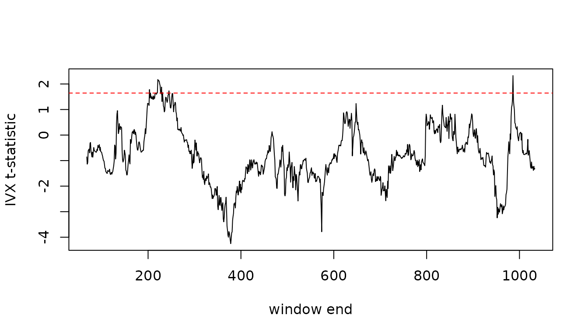

Pavlidis, Paya & Peel (2017) detect periodically collapsing
bubbles by running the Fama (1984) regression inside a rolling window
and drawing inference with IVX. Everything the procedure needs is
already in ivx(), so this vignette shows how to build it in
a few lines rather than through a dedicated function.
The procedure is:
- Fix a window of
wobservations. The paper usesw = max(25, r0 * T), wherer0 * Tis the minimum window rule of Phillips, Shi & Yu (2015):r0 = 0.01 + 1.8 / sqrt(T). - For every window ending at
t = w, ..., T, fit the predictive regression withivx()and keep the IVX t-statistic of the slope. Under the null the statistic is standard normal. - Compare the sequence against a constant critical value. For the
overall test of “any bubble in the sample” the paper applies a
Bonferroni correction for the
T - w + 1hypotheses,qnorm(1 - alpha / (T - w + 1)). For dating the episodes it compares each statistic with the plainqnorm(1 - alpha).
library(ivx)
ivx_roll <- function(formula, data, window, horizon = 1, alpha = 0.05, ...) {
n <- nrow(data)
ends <- window:n
tstat <- vapply(ends, function(e) {
fit <- ivx(formula, data[(e - window + 1):e, ], horizon = horizon, ...)
fit$tstat[1]
}, numeric(1))
data.frame(
end = ends,
tstat = tstat,
cv = qnorm(1 - alpha),
cv_bonf = qnorm(1 - alpha / length(ends))
)
}fit$tstat is coef / se, i.e. the IVX
t-ratio of the first regressor; the one-sided alternative in the paper
is a slope above its efficient-market value. With the KMS monthly
data:
n <- nrow(kms)
w <- max(25, floor((0.01 + 1.8 / sqrt(n)) * n))
r <- ivx_roll(Ret ~ LTY, kms, window = w)
max(r$tstat)
#> [1] 2.327991
r$cv_bonf[1]
#> [1] 3.882191The overall test rejects if the maximum statistic exceeds the Bonferroni critical value. Episodes are dated by the periods where the statistic sits above the standard normal critical value:
plot(r$end, r$tstat, type = "l", xlab = "window end", ylab = "IVX t-statistic")
abline(h = r$cv[1], col = "red", lty = 2)
abline(h = r$cv_bonf[1], col = "red")
range(r$end[r$tstat > r$cv])
#> [1] 203 986For a long-horizon Fama regression pass horizon = n and
the overlapping regressand; ivx() then uses the Phillips
& Lee (2013) long-horizon estimator. Bootstrap critical values for
each window can be obtained by replacing the qnorm()
constants with ivx_boot() quantiles, at the cost of
B extra fits per window.
References
Pavlidis, E. G., Paya, I., & Peel, D. A. (2017). Testing for speculative bubbles using spot and forward prices. International Economic Review, 58(4), 1191-1226.
Phillips, P. C. B., Shi, S., & Yu, J. (2015). Testing for multiple bubbles: Historical episodes of exuberance and collapse in the S&P 500. International Economic Review, 56(4), 1043-1078.